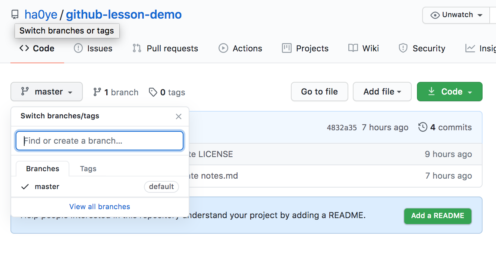
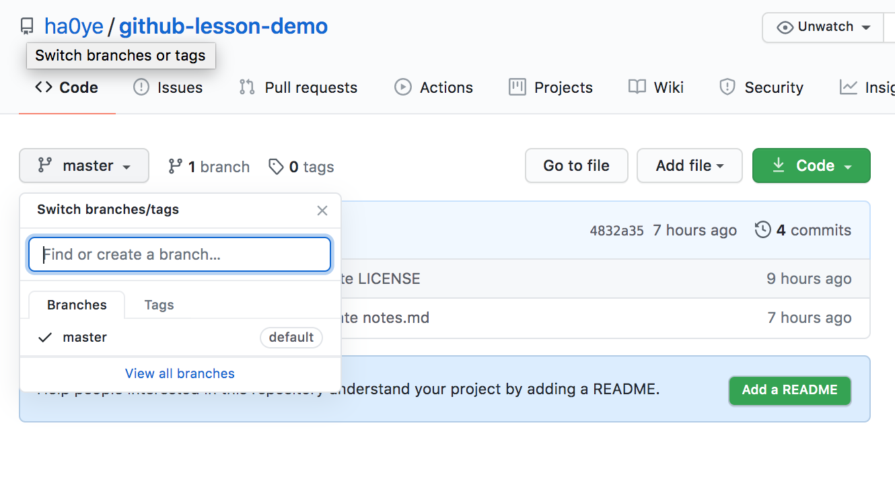
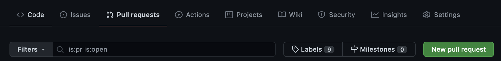
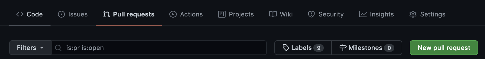

Hao Ye Reproducibility Librarian, University of Florida (updated: 2021-06-29)
Intro
🚀 You’ve got a team and a project idea and are ready to GO! 🚀 How do you effectively work together?? * Can you edit someone else’s changes? * Can multiple people update the codebase at the same time? * How do you save everyone’s work, just in case? * How do external folks contribute to the project? * What is in this talk? 1 hour is only enough time to go over basic concepts and workflow practices. - enough to get started (even if you haven’t used git or github before) We will conclude with a quick hands-on exercise using the GitHub website. (If teams do not yet have a shared repo that every team member has access to, please speak up now!) This lesson teaches you to: NA * Basic Concepts * Version Control Version Control: tools/systems to manage changes to files ## You are probably already using version control! * MS Word has “track changes” * Dropbox / Google Drive can revert versions * Why Learn Git & GitHub Git & GitHub are version control for projects. You can: * restore project states involving changes to multiple files. * track who made what changes and why * handle changes in any file format * manage work from large distributed teams * Git and GitHub ## (not the same thing!) * Git * Git is the name of the software and the associated version control system * default interface is the command line - commands have unintuitive names - error messages can be obscure * many other tools improve on the experience - graphical interface - integration with other things, including GitHub * GitHub * a cloud platform that hosts Git repos * unlimited public and private repos * size limits: - 1 GB for each repo - 100 MB for individual files * GitHub Actions provide continuous integration - great for testing or deploying * Git tracks versions for projects * Basic Mechanics * Versioning occurs on the level of a projects: - A project folder is a repository or repo, for short. * Changes are recorded by taking a snapshot of the folder: - each snapshot is called a commit.  * Commit Structure * each commit has a commit message - 1-line summary (required) - blank line - further details * each commit also records who and when * good commit messages help you find the right past project state! * Constructing a Commit * each commit is created manually -
* Commit Structure * each commit has a commit message - 1-line summary (required) - blank line - further details * each commit also records who and when * good commit messages help you find the right past project state! * Constructing a Commit * each commit is created manually - add files with changes (including new files) - run commit command
write the commit message * Why so tedious? - You have full control over the changes that are recorded in each commit * Navigating Commits * Git generates a unique hash for each commit * You can retrieve a commit by using the checkout command and the desired hash * The file/folder contents will change to reflect the project state for that commit. In Git, files and folders are temporary; nothing is saved and safe unless it is in a commit.
GitHub as a Backup System
file backup = store a copy somewhere else How do you backup a Git repository? Git stores all of the information about commits, history, etc. the .git folder of your project * .git is normally hidden * You can copy over the project folder, and it will contain the full git history. (e.g. You can store it in Dropbox.) * You can also specify other locations to synchronize a git repository to.
These are called remotes. * GitHub GitHub acts as a remote in the cloud. 1. Create an empty GitHub repo to be your remote location 2. Synchronize this GitHub repo to your computer 3. push will send all new commits on the current branch to GitHub 4. pull will retrieve new commits from GitHub * Branches Let You Experiment * About Branches For simple projects, your commits may proceed in a linear fashion: - each commit is a step forward But you might want to work on different aspects of your project at the same time! branches allow you to label and save work that may or may not end up in a final version to be published.  [img: https://www.atlassian.com/git/tutorials/using-branches] * different branches are separate paths, and in different colors * each point on a branch is a commit * Creating new branches (GitHub)  * Tips for Creating Branches * choose names that won’t overlap with anyone else’s:
[img: https://www.atlassian.com/git/tutorials/using-branches] * different branches are separate paths, and in different colors * each point on a branch is a commit * Creating new branches (GitHub)  * Tips for Creating Branches * choose names that won’t overlap with anyone else’s:
“<name>-<feature>” is a common strategy
e.g. “hao-update-readme” * double check which branch you are in before making a commit! * A Merge/Pull Request Combines Work from Separate Branches * Merges A merge combines changes from separate branches together into a new commit. * If the changes are in separate files or separate sections of a common file, merging is automatic. * Otherwise, a merge conflict occurs, and you need to manually reconcile the differences for the merge commit. * Example Merge Conflict  * Pull Requests On Github, merges start by creating a pull request. Pull requests are a way for a maintainer or a team to review and comment on merges before they happen.  * Creating a Pull Request
* Pull Requests On Github, merges start by creating a pull request. Pull requests are a way for a maintainer or a team to review and comment on merges before they happen.  * Creating a Pull Request , the text box (which is empty), and the green button for 'Create pull request'.") * Collaborating on GitHub * Sharing Repos On GitHub, you can add other accounts as collaborators to give them write access. If you try to work in the same branch, you have to wait for the other person to finish making changes before you can make changes! We don’t have time for this! * GitHub Flow for Collaborations * a primary branch, e.g. “main”, stores the working version of the project * updates happen in branches * when work is ready to be merged into “main”, create a pull request * after merging, unneeded branches can be deleted * Benefits * multiple lines of work can happen at the same time, in different branches * subteams can work together on shared branches - pull request from separate branches to a shared group branch - discussions can happen in the pull request * Exercise We will now test out the GitHub Flow system on your project repos: 1. create a new branch
* Collaborating on GitHub * Sharing Repos On GitHub, you can add other accounts as collaborators to give them write access. If you try to work in the same branch, you have to wait for the other person to finish making changes before you can make changes! We don’t have time for this! * GitHub Flow for Collaborations * a primary branch, e.g. “main”, stores the working version of the project * updates happen in branches * when work is ready to be merged into “main”, create a pull request * after merging, unneeded branches can be deleted * Benefits * multiple lines of work can happen at the same time, in different branches * subteams can work together on shared branches - pull request from separate branches to a shared group branch - discussions can happen in the pull request * Exercise We will now test out the GitHub Flow system on your project repos: 1. create a new branch
(named “<your name>-readme”) 2. in GitHub, add your name to the Team section of the README file, and commit the changes 3. create a pull request to the main branch * Takeaway Messages * commits are records of your project * branches are alternate timelines * merges & pull requests combine work across branches * the GitHub Flow system lets you collaborate as a team ## Thanks
- Don’t forget to install the Git software if you want to use Git on your computer.
- I recommend the GitHub Desktop software if you want a graphical client.
- “Understanding the GitHub flow” has more details on the GitHub Flow system